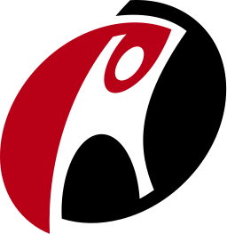

Howdy! My name's Kaustav Haldar and I'm a developer based in Canada.
I've built websites, web, mobile & desktop apps, worked on data science & distributed systems
Sent accepted patches & features to various large open-source projects
 SE II, Scribd, Remote, 2020
SE II, Scribd, Remote, 2020 SE, IBM Cognos, Ottawa, 2018 - 2019
SE, IBM Cognos, Ottawa, 2018 - 2019
B.A. Psychology, University of Waterloo, 2013-2017
Software Engineer Intern @ Rackspace, 7/2015 - 3/2016
Logistics Director @ Hack the North, 2014
Founder @ Sparkgig, 9/2013 - 4/2014
My non-programming interests include psychology, neuroscience, endocrinology, pharmacology & excercise science.
 Blog
Blog Github
Github LinkedIn
LinkedIn Contact
Contact